Xiaoya Wang
Table of Contents
1 – Systems
System Introduction
This system is called using the artificial intelligence to design an architecture. Users and artificial intelligence are elements of this systems. Its function is to use the artificial intelligence to calculate the input design requirements, such as building type and surrounding environment, and then come up with a more suitable design plan. People can get an appropriate and ideal architecture design scheme through this system.
The following is the hierarchy of this system. First, input design requirements and surrounding building models. Based on the information inputted, AI will analyzes the appropriate layout of the rooms, orientation of the building and plane window opening,etc., and present several schemes for users to choose from. In these schemes, you can see the dynamic analysis of the plane lighting, heat dissipation, etc. Users can let AI recalculate or go back and modify the commands if there is no satisfactory solution. After choosing the plan design scheme, The system will generate the corresponding structural models according to the plane you choose. Then inputting the requirement for the facade design, and selecting the result you want. Users can skip over the structure and facade design, just generating the plane design. The result will be showed in a dynamic way, showing the construction process from nothing to the plane to the entire building.
This system needs data support. It is necessary to input code of architecture design to reinforce the feedback loop. The most problematic part of this system is that architectural design is a complex process, so sometimes the output results are not satisfactory and can only be used as references. Meanwhile we can not use this system to design the buildings with dramatic shapes. It can only do some relatively regular construction.
System Diagrams
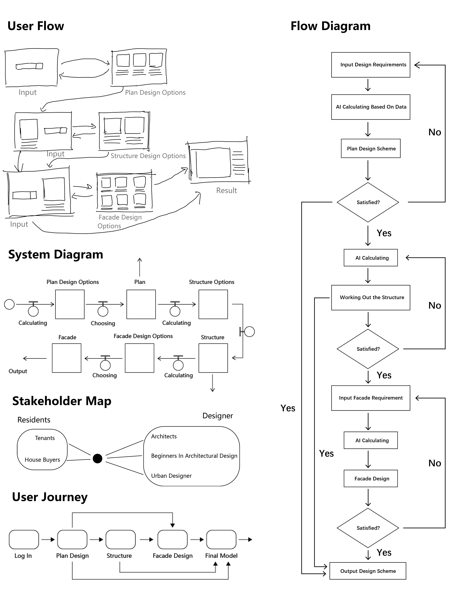System Behavior
We chose “whimsical” as the adjective of our machine. The main body of our machine is orange, a type of fruit that appears in almost every step of our system.
2 – Authorship
My Authorship Philosophy
Possible audiences of my system is divided into two kinds of people—people who have some knowledge of architectural design and those who don’t know about the architectural design. The interface for the expert is somewhat different from the interface for the non-expert. There is more explanation in the interface used by non-expert users, such as the meaning of technical terms, so that users can better understand the scheme. On the contrary, the interface for expert users would be more concise and intuitive.
1. Software engineer locks in: create an algorithm for calculating the properties of rooms inside a building, such as the room ventilation; suitabel database
2. Website, engineer: patterns of user interface; patterns of interactive interface
3. User locks in: the requirement of design
——The administrator of this system can have the copyright of the content created by users. On the one hand, the process of architectural design is complex, the designer will most likely need to modify the scheme, which will not be the final model, and it means the data obtained by the AI and the users’ final results will have a certain gap. Besides, users who know nothing about architectural design may only use the data as a reference, such as a reference to choose a room, so the administrator has this data will not affect them. On the other hand, administrator can let AI will use the user-generated model as a reference, so that it can generate a solution that can better meet the needs of users later.
——As an author, what I need to do is to provide adequate and accurate background information, like the model of the entire cities and weather conditions of the city. The height and shape of each building should be accurate enough for AI to calculate precisely. Users need to guarantee that they will not use the generated models for illegal purposes.
——Who should have control:
1. AI Developers and Data Scientists. They have control in the technical aspects of the system, including model training and algorithm updates. They have authority to implement changes to the AI system.
2. Users. They have control in the final results. This is because they can override AI suggestions and make critical design choices.
——Authorship levels:
The user author—they input the design requirement and select design flow
The program author—Write and maintain codes so that programs can calculate data to gain appropriate solutions
Examples
Midjourney
Midjourney’s mode of operation is similar to that of my system. Both professional and amateur painters can draw with Midjourney. Users need to select appropriate instructions, and input the key words, then they can get some pictures that fit the descriptions. Users can either select one of the images to output or continue generating images until they are satisfied with the image.
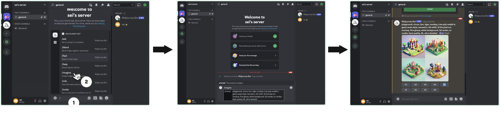YouTube
YouTube allows non-expert users to upload their videos. My system also hopes that both non-expert users and expert users can participate in this process, which means that people with no experience in architectural design can also experience the process of designing architectures.
Google Maps
The interactive interface of Google maps is relatively rich, and users can easily get a lot of information. People can input the places they want to go to plan the route, and after inputting it will directly appear the relevant information of the area. Users only need to click the button and they will see all the information they want to see. Meanwhile, users can also choose a variety of travel methods. I want my system to have a relatively rich interactive interface, so that even non-expert users can understand how to operate and get a lot of useful information in a short time.

Generative Zine
Our zine, AI Artifact Playground, aims to be an interactive collection that showcases users' creations. Using 3D modeling alongside everyday objects, events, and scenes as starting points. We empower users to freely interact with the assets that we generate. This enables them to design objects and craft stories according to their visions. The zines that the user created are part of our zine.
We provide tools that enable users to use AI-generated assets to produce unique works that reflect their personal vision and creativity. This collaborative approach coordinates content creation. It operates without being constrained by conventional authorship. By distributing control, users can customize their experience and influence the system, while designers maintain the ethical and foundational rules of the tools.
Text to Image, Image to Model
We input prompts to the image generation tools such as OpenArt AI to get the image we want. Then, we uploaded images to 3D Model generation platforms. Now we have the assets for the “playground”!

Our Website
Our authorship philosophy embraces the evolving nature of creative ownership, particularly in the context of generative AI. In this model, the concept of authorship extends beyond traditional boundaries, empowering AI and users to become co-creators.
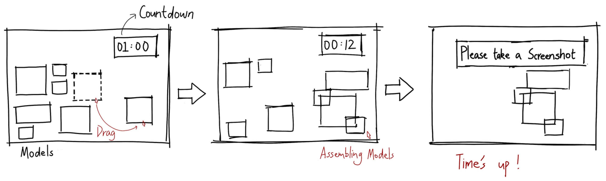Step 1: Open the page and drag the models
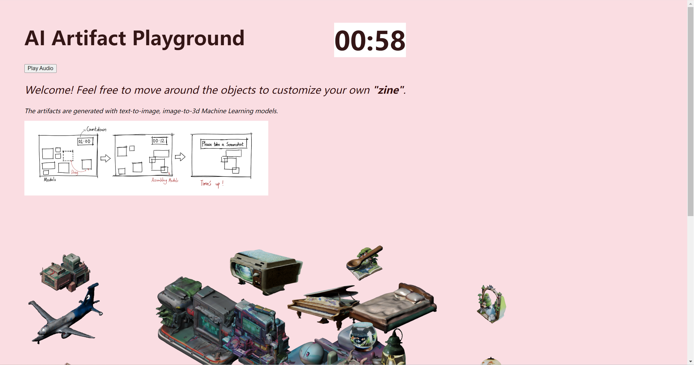Step 2: Assembling those models
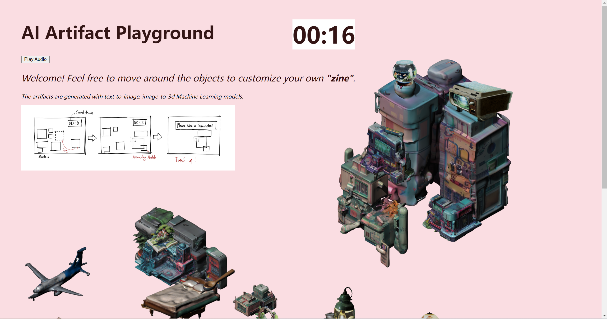Step 3: When the countdown ends, stop combining and take a screenshot
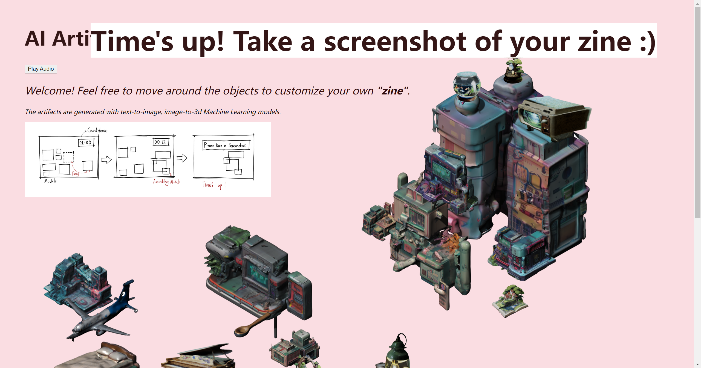

click to play the AI Artifact Playground
3 – Politics
Gathering Data
Hypothesis
When the users decide to use it design a residential building, they will focus on the comfort of the surrounding environment when choosing the site.
Datasets
Dataset 1: Ten well-rated apartments in New York City

Locations of Ten Apartments
Dataset 2: Ratings and Reviews
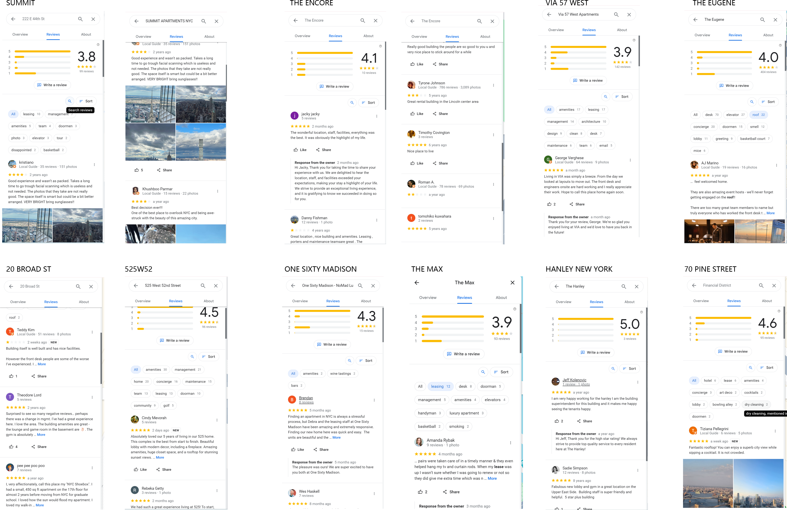Dataset 3: Tree Coverage
Count the number of trees and record the diameter at breast height of each tree in the four streets around the plot where these ten apartments is located.
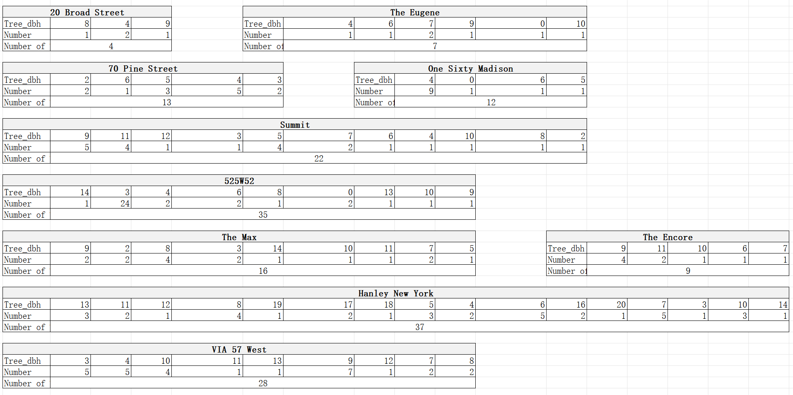Dataset 4: Types of Buildings Around
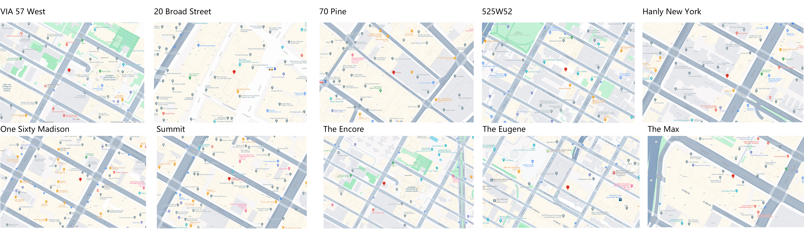Dataset 5: Number of Bus Stops in the Surrounding Area
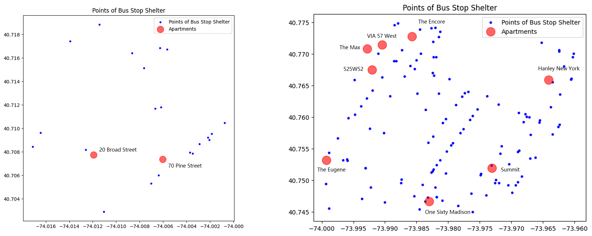By analyzing the number of bus stops around, we can analyze the convenience of the surrounding environment of residential buildings. As can be seen from the picture, each of these ten buildings is surrounded by at least one or two nearby bus stop shelter.
Among the five sets of data I selected, the first set is the determination of residential buildings, and the last four sets can directly or indirectly see the comfort level of the surrounding environment of the buildings. It can be seen that these ten buildings are all distributed in the middle and south of Manhattan, which are prosperous, convenient in transportation, and have a certain coverage rate of green plants, and it also explains the relationship between the comfort of the surrounding environment and residential buildings to a certain extent. This will also be helpful in the statistical process of designing the system in the future.
Sketch Prototypes
I choose the data set tree coverage for presentation. I show the overall arrangement of trees in the street and the distribution and quantity of trees around the ten residential buildings selected before.
1. Analytical x Mapping x P5.js
Above are two interactive maps of the distribution of street trees in 1995 and 2015, where the red circle represents the residential buildings, and the green dot represents the trees. Click on the dots representing trees, you can see the diameter at breast height of each tree. It can also be seen from the map that with the change of time, there are more and more trees around, and the tree coverage rate becomes higher.
2. Analytical x Data Visualization x Python
I took the points of ten residential buildings as the center of a circle and counted the number of trees within the radius of one kilometer.
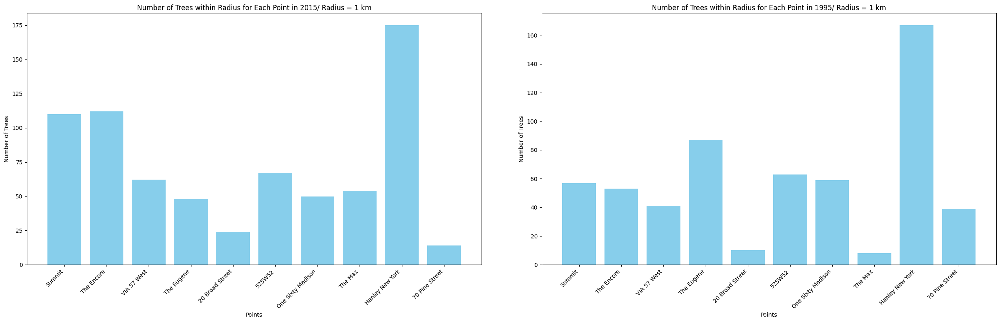3. Analytical x Data Visualization x Grasshopper
Import the csv file into grasshopper, draw a circle in grasshopper with the coordinate points of the residential buildings as the center of the circle, screen the points in the circles, and use the gradient tool to fill in the color of each circle according to the number of points contained, so as to more obviously compare the change of the number of street trees from 1995 to 2015.